Kekayaan yang Kami Kembangkan
A. UMKM
.jpeg)
Penjahit Cinta Fashion
UMKM yang berfokus pada pembuatan pakaian, tas, dan lain-lain. Dengan meningkatkan kapasitas produksi, UMKM ini dapat berkembang lebih lanjut agar dapat memenuhi target penjualan.
Buka Lokasi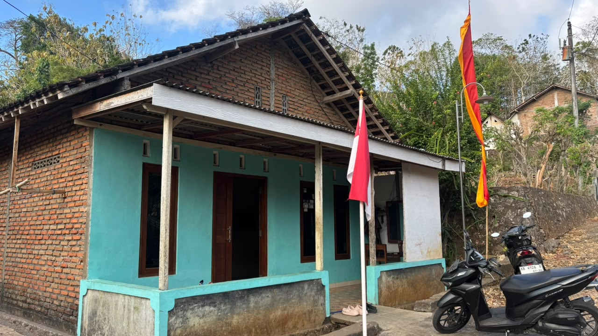
Tukang Cukur Ferry Potong Rambut
UMKM yang berfokus pada bidang cukur rambut. Dapat berkembang dengan meningkatkan teknik pemotongan dan menambah alat agar lebih menarik.
Buka Lokasi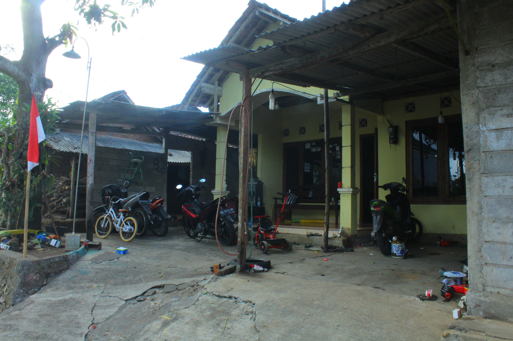
Bengkel D2
UMKM yang berfokus pada bidang perbaikan motor dan jasa angkutan. Dapat berkembang dengan meningkatkan teknik pemasaran dan membuka usaha sparepart motor.
Buka LokasiToko Issabel
Warung klontong yang menyediakan kebutuhan sehari-hari seperti gas, galon, makanan ringan, tempat kopi, dan lain-lain.
Buka Lokasi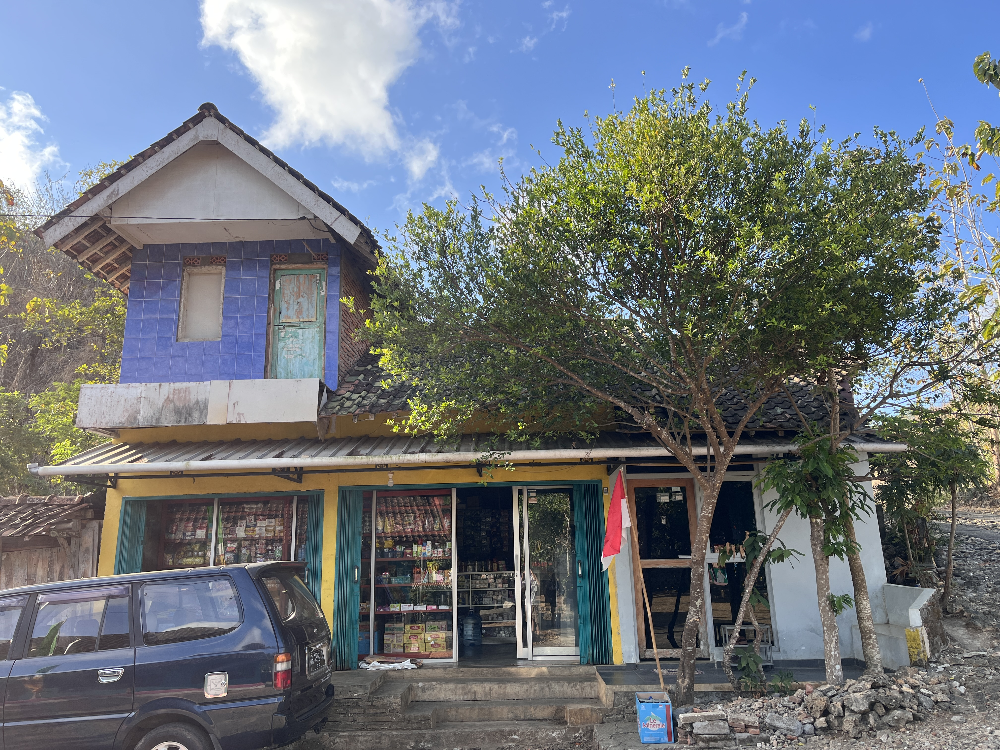
Toko Yoga Makmur
Warung klontong yang melayani kebutuhan pokok dan barang sehari-hari warga, turut menopang perekonomian lokal.
Buka Lokasi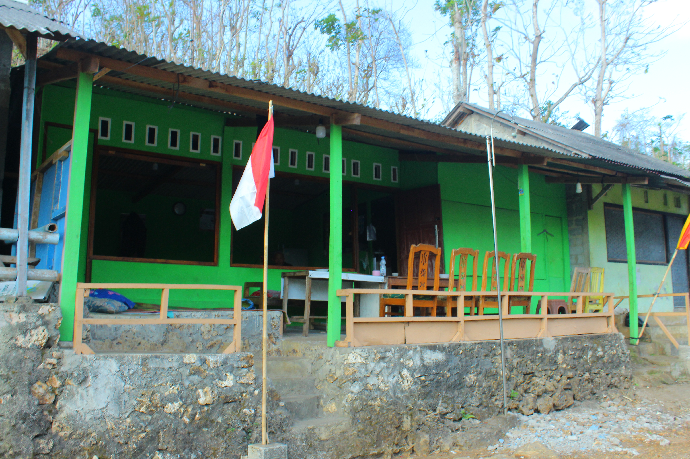
Angkringan Candy
Warung klontong dengan menu andalan makanan ringan dan tempat kopi, menjadi pusat nongkrong warga.
Buka Lokasi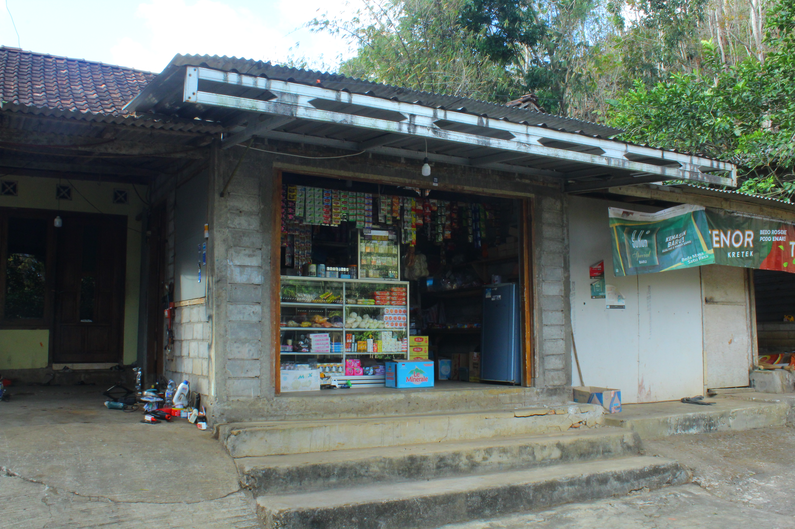
Toko D2
Warung klontong yang menyediakan kebutuhan sehari-hari dan menjadi tempat berbelanja warga sekitar.
Buka LokasiB. Pertanian
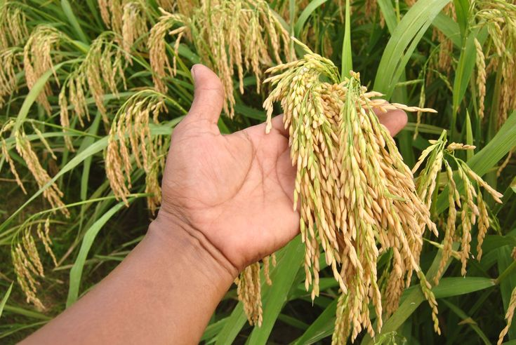
Padi
Komoditas utama pertanian di Brongkol, dengan irigasi tetes dan teknologi modern untuk hasil panen berlimpah.
Jagung
Jagung memiliki potensi besar untuk dikembangkan sebagai sumber pangan dan pakan ternak.

Ubi Kayu
Ubi kayu menjadi bahan baku olahan khas (lempeng) dan sumber karbohidrat alternatif.
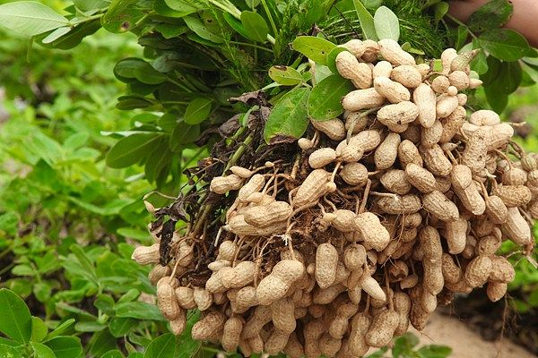
Kacang
Kacang-kacangan turut menjadi komoditas pertanian yang dikembangkan warga.
C. Peternakan
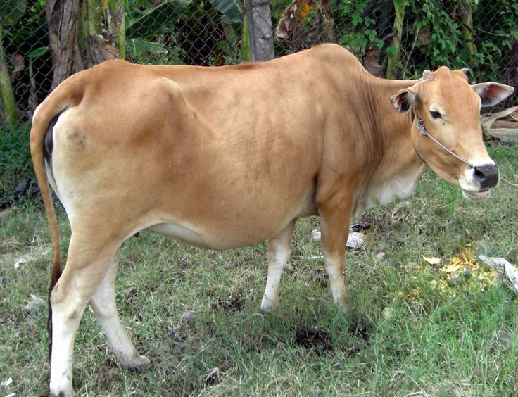
Sapi
Sapi sebagai komoditas pedaging dan penghasil pupuk organik, dikelola dengan pemeliharaan kesehatan hewan modern.
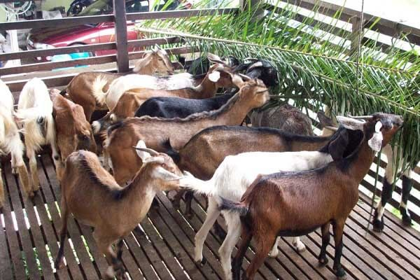
Kambing
Kambing dipelihara untuk konsumsi dan dapat dikembangkan dengan manajemen pakan yang baik.
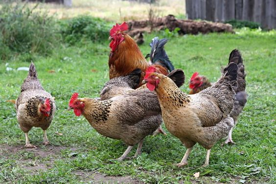
Ayam Kampung
Ayam kampung menghasilkan telur berkualitas dan daging yang diminati pasar lokal.
D. Kearifan Lokal
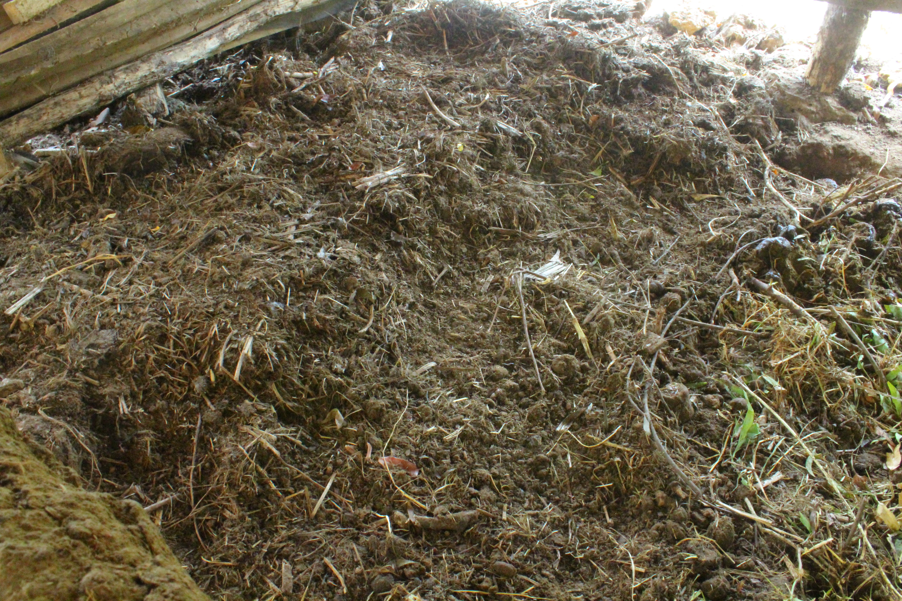
Biogas & Pupuk Organik
Pemanfaatan limbah ternak menjadi biogas dan pupuk organik untuk pertanian berkelanjutan.

Tradisi Sedekah Bumi & Bersih Dusun
Pelestarian tradisi sebagai identitas spiritual dan sosial warga.
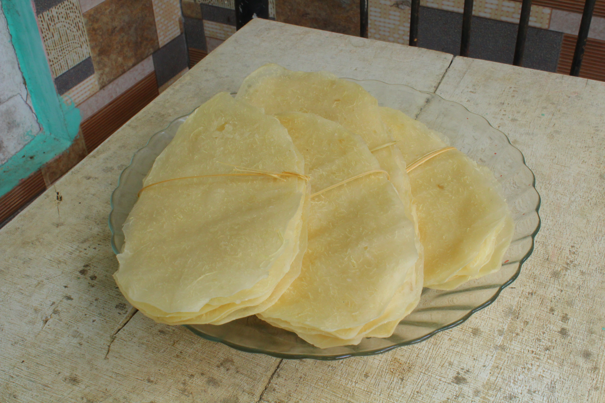
Lempeng
Lempeng dari ubi kayu adalah makanan tradisional Indonesia yang terbuat dari parutan ubi kayu yang dicampur dengan gula, garam, dan kelapa parut. Adonan kemudian dibentuk menjadi lembaran tipis atau bulat, lalu dipanggang atau digoreng hingga matang dan renyah.